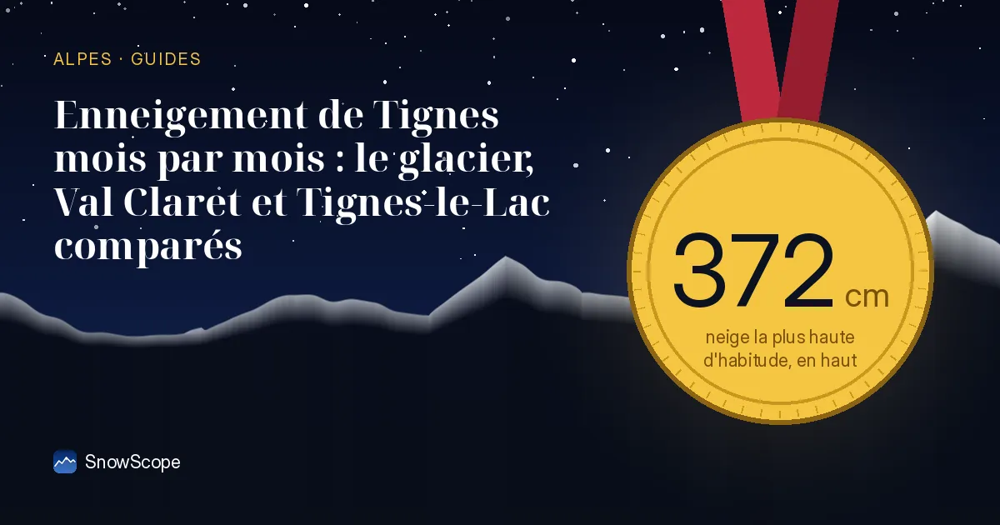
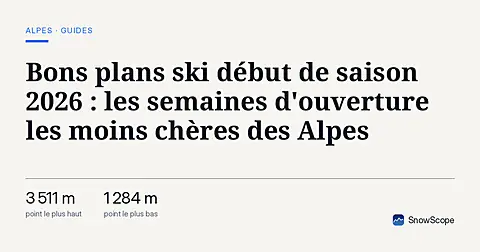

Enneigement de Tignes mois par mois : le glacier, Val Claret et Tignes-le-Lac comparés
Tignes est l'une des rares stations des Alpes où les villages eux-mêmes sont au-dessus de deux mille mètres, et le domaine relié à Val d'Isère monte de 1559 m à 3447 m sur le glacier de la Grande Motte : 211 km de pistes cartographiées, 84 remontées. L'enneigement est la raison pour laquelle on la réserve. Voici ce qu'il est habituellement, mois par mois, d'après notre historique de 46 hivers à trois altitudes du domaine.
Consultez les prévisions neige en temps réel pour Tignes - Val d'Isère sur l'application SnowScopeHauteurs de neige, alertes poudreuse et carte 3D, gratuitement.

Trois altitudes, trois hivers
En bas du domaine (1559 m, la vallée de Val d'Isère et les pistes les plus basses), le maximum hivernal habituel est de 117 cm. À mi-pente (2503 m, l'altitude des villages de Tignes et des grands vallons), il est de 216 cm. Au sommet (3447 m, le glacier), de 372 cm. Le chiffre du milieu est celui qui décrit un séjour à Tignes : les villages sont déjà à l'altitude où la neige est sérieuse.
Automne et décembre : un départ précoce
La première neige tient à mi-pente avant le 5 octobre dans la moitié des hivers. Novembre laisse habituellement 33 cm à mi-pente et 76 cm sur le glacier, d'où le ski d'automne sur la Grande Motte pendant que les villages attendent. Décembre atteint 80 cm à mi-pente et 161 cm au sommet ; neuf décembres sur dix avaient au moins 43 cm à mi-pente.
De janvier à avril : le long plateau
Janvier affiche 126 cm à mi-pente, février 164 cm, mars 179 cm et avril 178 cm, le mois le plus enneigé à cette altitude. Sur le glacier, la hauteur habituelle grimpe à 263 cm en mars et 297 cm en avril.
La semaine la plus sûre à mi-pente est la semaine 16, mi-avril, avec 186 cm habituels et tous les hivers passés au-dessus de 50 cm. La mi-pente garde 50 cm ou plus pendant 21 semaines dans neuf hivers sur dix, 27 semaines dans la moitié. Ce pic tardif est la signature de Tignes : les meilleures semaines sont plus tard que ce que la plupart réservent.
Mai : le glacier continue
En mai, le glacier a encore 253 cm une année habituelle, et la dernière neige quitte la mi-pente avant le 19 juin dans la moitié des hivers. La neige couvre le sol à mi-pente 234 jours par an, et 241 jours au sommet.
Mois par mois à trois altitudes
En décembre, un hiver habituel donne 42 cm en bas (1559 m), 80 cm à mi-pente (2503 m) et 161 cm au sommet (3447 m). En janvier, un hiver habituel donne 73 cm en bas (1559 m), 126 cm à mi-pente (2503 m) et 213 cm au sommet (3447 m). En février, un hiver habituel donne 97 cm en bas (1559 m), 164 cm à mi-pente (2503 m) et 239 cm au sommet (3447 m).
En mars, un hiver habituel donne 94 cm en bas (1559 m), 179 cm à mi-pente (2503 m) et 263 cm au sommet (3447 m). En avril, un hiver habituel donne 58 cm en bas (1559 m), 178 cm à mi-pente (2503 m) et 297 cm au sommet (3447 m).
Un hiver pauvre et un hiver riche
L'écart compte autant que la moyenne. À mi-pente, neuf marss passés sur dix avaient au moins 138 cm et un sur dix 228 cm ou plus ; au sommet, la même fourchette va de 192 à 345 cm.
Sur l'hiver entier, le maximum à mi-pente est allé de 152 cm l'hiver le plus pauvre à 295 cm le plus riche, autour de 216 cm habituels ; au sommet de 257 à 627 cm autour de 372 cm. La neige a couvert le sol à mi-pente 234 jours dans un hiver habituel, et la première neige s'y est installée avant le 5 octobre dans la moitié des hivers. Ce sont des valeurs de modèle pour le domaine sur 46 hivers passés, pas des mesures de la station ; elles décrivent ce à quoi s'attendre, pas ce que les dameuses ajoutent.
Ce qui a changé en 46 hivers
Le maximum habituel sur le glacier est passé de 401 cm sur les 15 premiers hivers de notre série à 377 cm sur les 15 derniers. À mi-pente, de 228 à 213 cm. La station perd un peu en haut et tient au milieu ; l'hiver dernier, le maximum à mi-pente a été de 222 cm.
Conseils aux skieurs
- Mars et avril sont les semaines les plus enneigées à l'altitude des villages ; la fin de saison est la force de Tignes.
- Début décembre est sûr sur les hauts vallons et le glacier ; les pistes les plus basses vers Val d'Isère sont celles à surveiller.
- Nos hauteurs sont une estimation pour le domaine d'après les hivers passés, pas des mesures de la station ; l'ouverture des remontées est sur le site officiel.
- Consultez le bulletin d'avalanche de la Haute-Tarentaise avant de quitter les pistes.
Références et crédits
- Wikipédia, « Tignes », consulté le 22 November 2026. fr.wikipedia.org/wiki/Tignes
À propos de ces chiffres
Chiffres de neige : historique SnowScope, 46 hivers passés (1980-81 à 2025-26) à trois altitudes de la station, un modèle du passé corrigé de l'altitude (une estimation pour une zone, pas les bulletins de la station). Remontées, pistes et accès : les sources ci-dessous, vérifiées à la date indiquée.
Bulletins d'avalanche officiels: Météo-France – Bulletin d'estimation du risque d'avalanche
Citer ce bulletin
Pour la recherche, l'enseignement ou la presse : chiffres et graphiques réutilisables librement sous CC BY 4.0 avec cette citation.
SnowScope (2026), Enneigement de Tignes mois par mois : le glacier, Val Claret et Tignes-le-Lac comparés, https://snowscope.app/blog/fr/2026/11/tignes-snow-conditions-by-month-glacier-val-claret-tignes-le-lac.html, consulté le 2026-11-22
SnowScope (Atlas Labs). (2026, November 22). Enneigement de Tignes mois par mois : le glacier, Val Claret et Tignes-le-Lac comparés. SnowScope snow reports. https://snowscope.app/blog/fr/2026/11/tignes-snow-conditions-by-month-glacier-val-claret-tignes-le-lac.html
BibTeX
@misc{snowscope2026tignessnowconditionsbymo,
author = {{SnowScope (Atlas Labs)}},
title = {Enneigement de Tignes mois par mois : le glacier, Val Claret et Tignes-le-Lac comparés},
year = {2026},
month = nov,
howpublished = {\url{https://snowscope.app/blog/fr/2026/11/tignes-snow-conditions-by-month-glacier-val-claret-tignes-le-lac.html}},
note = {Published 2026-11-22 11:14 UTC; accessed 2026-11-22}
}· CC BY 4.0 · Méthodes, données et outils →
Suivre Tignes - Val d'Isère
Gratuit : un message quand la neige arrive, et la météo chaque matin.
Autres bulletins neige

Dix stations de ski européennes classées pour leur rapport qualité-prix en décembre, avec Les 2 Alpes en tête avec 75 cm de neige à mi-montagne.

Comparez les probabilités de neige en décembre et les tarifs vérifiés de forfaits dès 40,00 EUR dans les domaines skiables italiens pour votre week-end en voiture.

De 20 EUR pour un week-end d'ouverture à des forfaits de 6 jours avant Noël : un calendrier des meilleurs bons plans de début de saison dans les Alpes pour 2026, avec la neige à laquelle s'attendre.